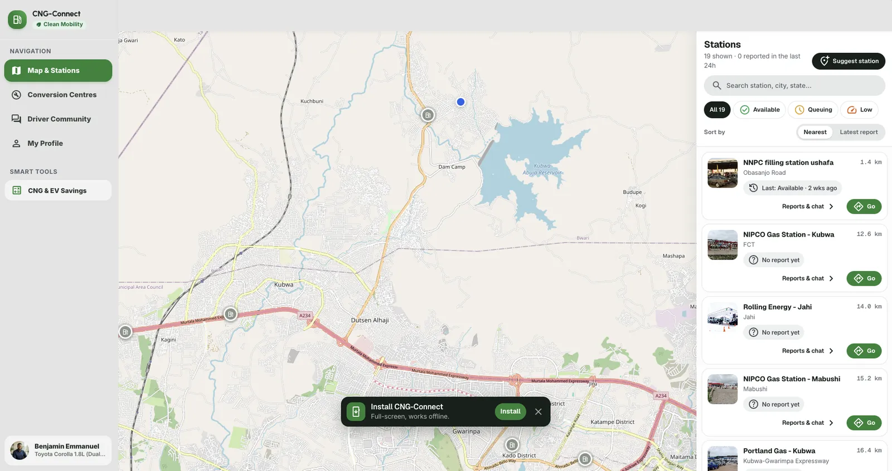
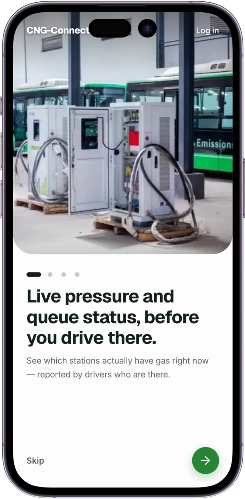
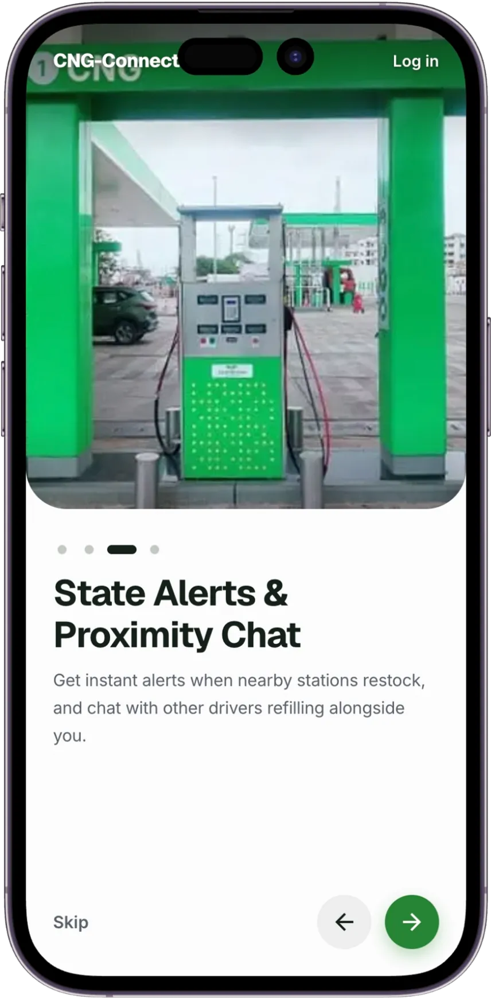
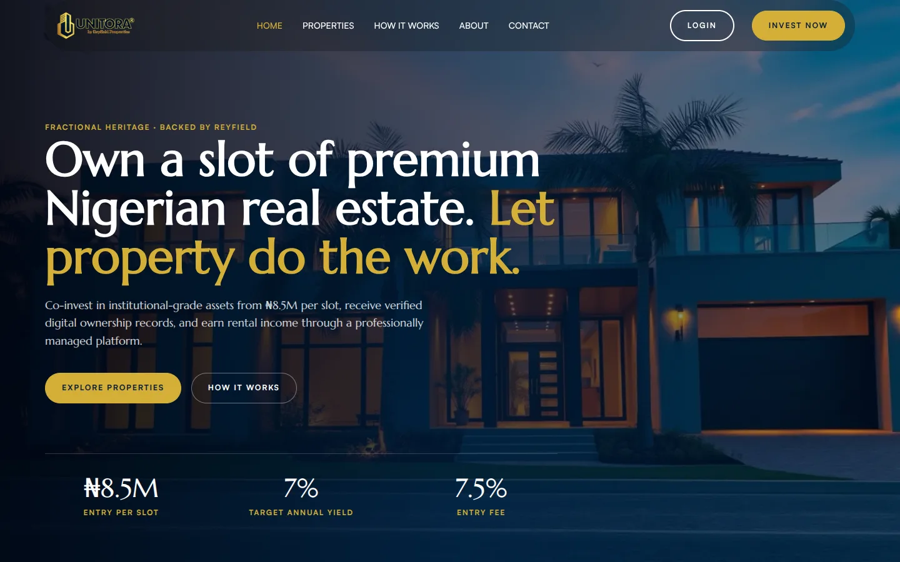

Helping drivers find gas before they join the queue
A live, crowd-reported station map for Nigeria's CNG drivers, honest about how old each report is.
- Role
- Solo designer and developer
- Platform
- Installable PWA
- Coverage
- 100+ stations, 451+ centres
- Timeline
- Aug 2026 – present

Goal
Give drivers live, trustworthy station status, and keep crowdsourced data fresh when there are far more stations than reporters.
Context
Drivers converting to CNG queue for hours every day without knowing which stations have gas. The WhatsApp groups meant to help are full of false reports. I conceived, designed, and built CNG-Connect to answer that.
Outcome
Drivers now see how old every station report is, across 100+ stations and 451+ accredited conversion centres. Reported CNG fleet: about 120,000 vehicles.
Process
Drivers were queueing on rumours
18
WhatsApp groups sharing gas updates in one city
200–700
members in each group, with no way to tell true reports from false ones
- 01
Listening to drivers
I spoke with drivers of CNG cars. Most went out daily and queued for hours without reliable information on which stations had gas.
- 02
Looking at what they already used
Drivers had formed WhatsApp groups to share updates, but much of what was posted was false. People drove around the city unsure where to get gas or whom to trust.
- 03
First attempt: ask the stations
I visited station managers and asked them to post availability to drivers on WhatsApp. Updates were inconsistent, and some were unwilling to take part.
- 04
What changed
Relying on managers or group chats would not give drivers information they could trust. CNG-Connect puts reports in the hands of drivers at the pump, on one live map, and asks for new reports where the data is oldest.
Constraints
Solo build. Research, design, and engineering by one person.
Inaccurate location data. Existing station locations could not be trusted and had to be geocoded.
Low buy-in from stations. Managers initially did not understand what the project was for.
Market
Information has not kept up with the fleet
~11,000
CNG vehicles in 2023
100,000+
Late 2025 / early 2026
~120,000
October 2026
1,000,000
Government target, 2027 to 2030 depending on the statement
Reported estimates from Pi-CNG and ministry statements, not audited counts. Sources differ on what they include.
The fleet grew roughly eleven-fold in about three years. Reaching the target means another eight-to-nine-fold increase, and every 1% of today's fleet is about 1,200 drivers.
Commercial drivers on Bolt, Uber and inDrive are the most exposed: a wasted trip to an empty or queued station costs income, not only time. Free conversions at accredited workshops add a second need, finding a workshop and knowing whether the switch pays back.
Design
Where can I fill up right now?
The app is built around the one question drivers ask on the road.

Four short screens explain live pressure and queue status before sign-in, with a skip at every step.

Drivers get alerts when nearby stations restock and can chat with others refilling alongside them.
Build
React and TypeScript on Supabase
A React and TypeScript front end on Supabase, with serverless functions for sign-in and the AI guide.
Station reports sync to every open map through Supabase realtime subscriptions, with row-level security on the data.
Sign-in by one-time code over SMS, with a 60-second cooldown per number.
Station data is cached on the device, and the app tells drivers when they're offline instead of failing silently.
Key decisions
Choices that shaped the product
-
1
Ask for reports where the data is oldest
PROBLEM
Crowdsourced status goes stale fast, and most drivers only open the app when they need gas.
DECISION
When a driver comes within 800 m of a station with an outdated status, the app asks them to report on it.
RESULT
Fresh reports are requested exactly where the map is least reliable.
-
2
Rate-limit sign-in codes
PROBLEM
Every SMS code costs money, and a script could drain the SMS balance in minutes.
DECISION
A 60-second cooldown per phone number, returned as a proper "too many requests" error.
RESULT
Sign-in stays cheap to run and resistant to abuse.
-
3
Test the parts that must not break
PROBLEM
Sign-in, permissions, and proximity alerts are hard to check by hand on every change.
DECISION
Wrote automated tests covering OTP services, the proximity alert engine, permissions, and phone validation. The suite is now 142 tests across 24 files.
RESULT
Changes ship with confidence, and the TypeScript build runs strict checks.
-
4
Show how old a status is, and stop trusting old ones
PROBLEM
Crowdsourced data goes stale silently, and a "full" tag from last week sends someone to an empty pump.
DECISION
Every station carries an age ("Available · 12 min ago"). Reports fall into tiers: fresh (up to 1 hour), recent (up to 24 hours) and stale (older). Stale reports keep their last-known status in grey but stop counting as current. Tiers recompute every minute and when the tab regains focus.
RESULT
Stations never reported show "No report yet" instead of an optimistic green dot.
-
5
Make cheating hard on the server
PROBLEM
Points for reports (50 for a status, 100 with a live photo) invite gaming.
DECISION
Points are awarded by a database function that checks the report and refuses to pay twice. Row-level security controls who can read and write, and rate-limit triggers cap how fast one account can post.
RESULT
The client cannot grant itself points or bypass limits.
-
6
Fix the leaks a security review found
PROBLEM
A review of my own policies found a privilege-escalation path on the admin flag and driver contact details exposed through a public view.
DECISION
Closed the escalation path, replaced the view with a leaderboard function, and moved to an enforced content-security policy. The policy once blanked the map for returning users because service worker tile requests were blocked; it is fixed and a test now guards it.
RESULT
The escalation path and the exposed contact details are closed, and a test now guards the policy that once blanked the map.
-
7
Accessibility as a requirement
PROBLEM
Map-first apps often fail screen readers and small touch targets.
DECISION
An axe-core audit of every main screen drove WCAG 2.2 AA fixes: button names match visible text, the active nav item is marked, map text sits on a type scale with nothing below 13px, touch targets are 40 to 44px, and motion stops after three pulses and respects reduced-motion.
RESULT
Every main screen passes the automated audit.
-
8
Keep a 100-card list fast on a cheap phone
PROBLEM
The desktop station list has 100+ cards.
DECISION
Off-screen cards skip layout and paint, so there is no need to virtualise the list.
RESULT
Long lists stay responsive without extra code.
Results
Built, tested and shipped by one person
142
Automated tests across 24 files, plus a written 15-minute production smoke test
215
Commits in about ten weeks
451+
Accredited conversion centres in the directory
100+
Stations on the live map
What went wrong, and what I learned
- The database paused itselfOn the free Supabase plan the project paused after a quiet stretch and the whole app stopped. I restored it and now check that the backend is awake at the start of every release. For something drivers rely on at a petrol pump, an always-on plan is the right call.
- Security is a series of small holesNone of the fixes were exotic. Each came from reading my own policies adversarially. Next time I would run that review before launch.
- Honest empty states beat confident wrong onesThe most valuable change was not a feature but saying "No report yet" instead of showing an optimistic green dot.
Result
Live at cngconnect.com.ng. Built by one person in about ten weeks, replacing rumours with reports drivers can check.
Next case study →
Unitora
Making property investment feel as safe as a bank.
